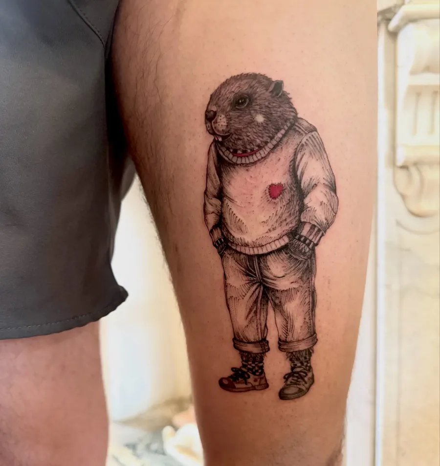
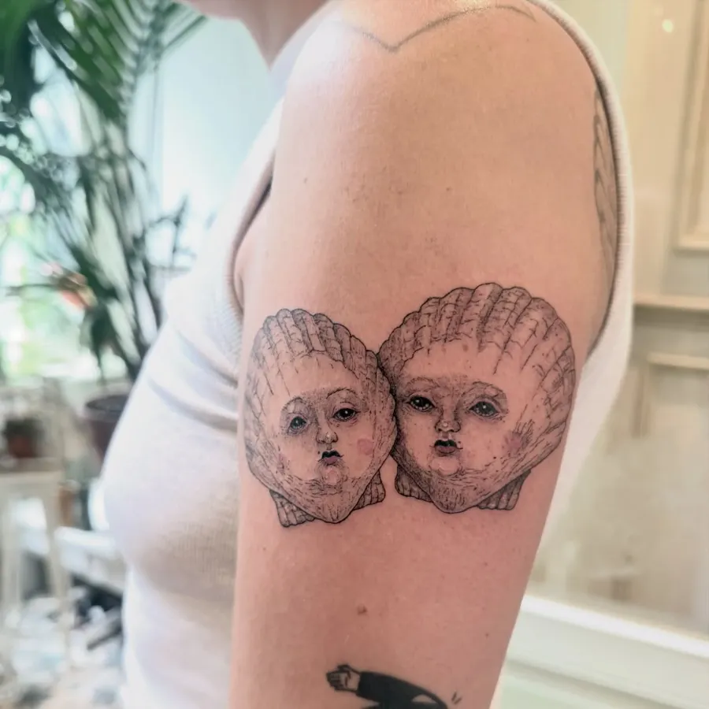
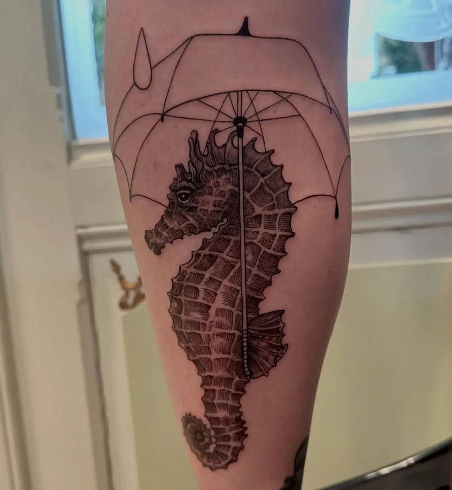
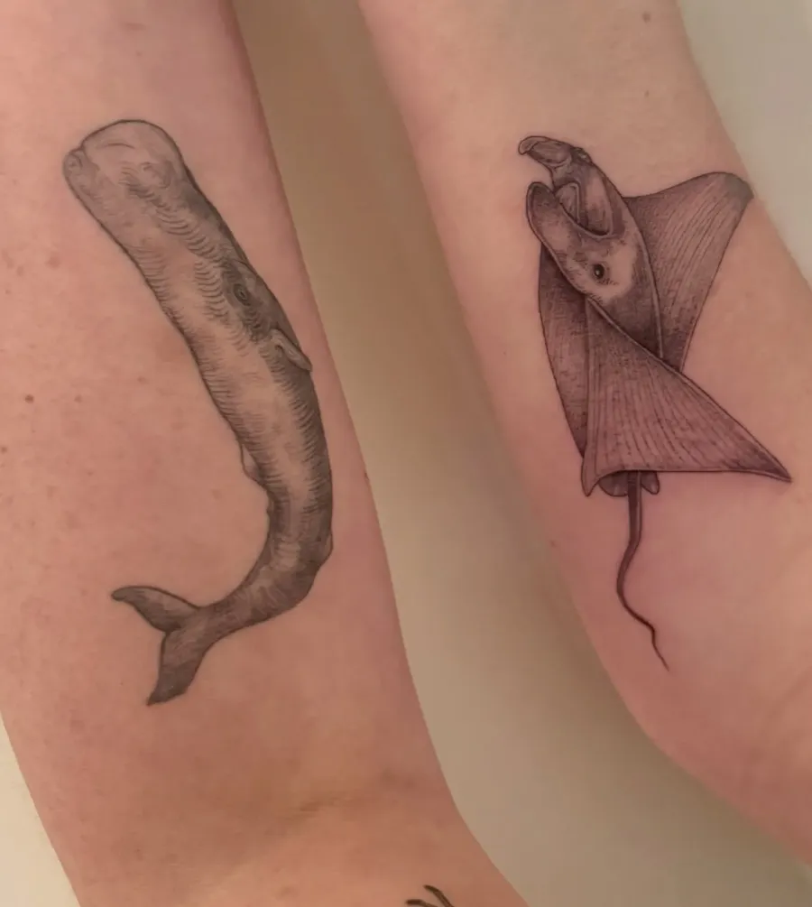
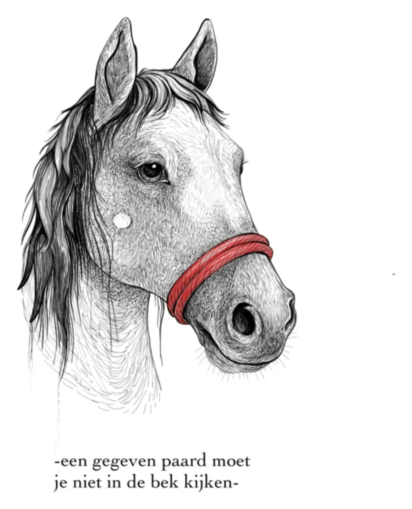
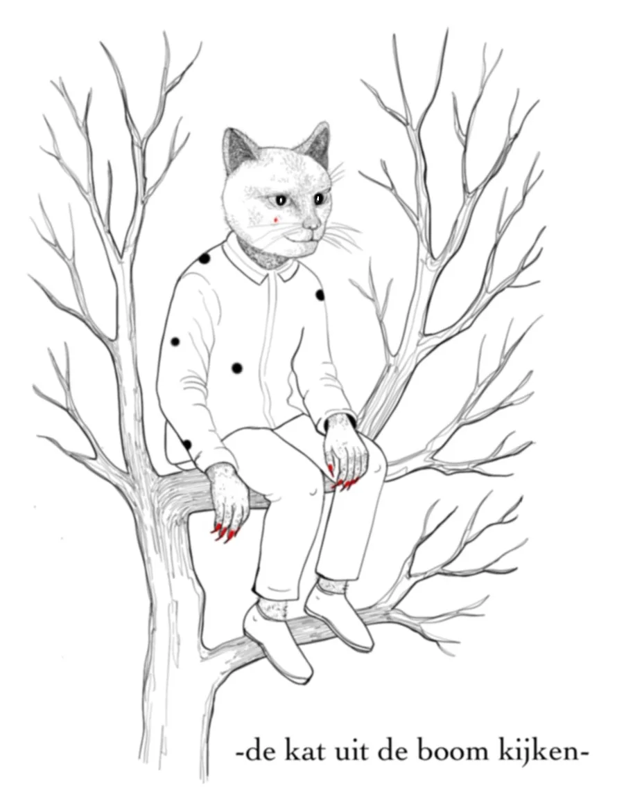
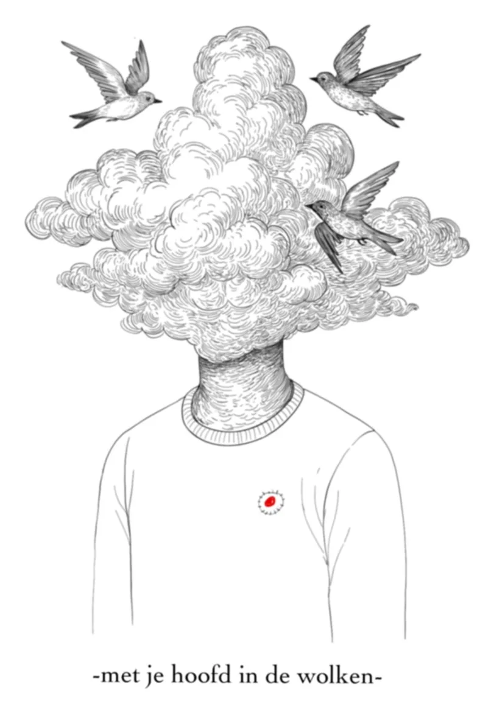

Kleine verhalen op de huid.
Fijn lijnwerk en zachte schaduw, meestal in zwart en grijs, soms met een vleugje kleur. Een bever met een hart voor iemands eerste tattoo, bergen in een bokaal, twee schelpjes met een gezichtje. Mijn ontwerpen teken ik zelf.








Wat je bij mij kan laten zetten
- Fine line en illustratiefMijn eigen ontwerpen, of jouw idee in mijn handschrift.
- Kleine tattoosEen beestje, een symbooltje, iets voor je eerste keer.
- Een vleugje kleurMeestal zwart en grijs, maar een rood hartje mag altijd.
- Cover-ups en beautiful scarsEen oude tattoo of een litteken, met iets moois erover. Samen met Huid Spel.
Zie je er een die je wil? Claim hem.
Tussen de afspraken door teken ik flash: ontwerpen die klaar zijn om te zetten. Vogels in kleren, vissen, en een reeks met onze eigen gezegdes.
Nieuwe flash verschijnt eerst op Instagram.
Claim een ontwerp





Een reeks met onze eigen uitdrukkingen, getekend zoals ik ze zie. De kat uit de boom kijken, met je hoofd in de wolken, een gegeven paard.
Zo gaat het in zijn werk.
- 1
Mail me je idee
Vertel wat je in gedachten hebt, waar het moet komen en hoe groot. Een foto of referentie helpt. Afspraken maak ik enkel via mail.
- 2
Even geduld
Een antwoord kan tot twee weken duren. Het komt, beloofd.
- 3
Een voorschot legt je datum vast
Dat voorschot krijg je niet terug, maar het gaat wel af van de prijs van je tattoo.
- 4
Rustig zetten, en nazorg
We nemen de tijd, ook voor uitleg. Je krijgt mee hoe je je tattoo goed laat genezen.
- Aan
- info@kliniktattooshop.be
- Onderwerp
- Tattoo-aanvraag
Dag Helen,
Ik zou graag een klein vogeltje in een trui laten zetten, op mijn bovenarm, ongeveer 8 cm groot.
In de bijlage stuur ik een paar foto's die me inspireren.

Een ui met beentjes, net gezet. Na de sessie leg ik uit hoe je hem verzorgt tot hij helemaal genezen is.
Vroeger een echte shop. Nu een atelier aan huis.
Ik werkte altijd in een echte tattooshop. Hoe langer ik tattoo, hoe meer ik hou van rust. Die rust kan ik je geven in mijn private studio: een mooi oud huis met een atelier, midden in Gent.
Naast tattoos teken ik, vaak met blauw potlood, en maak ik keramiek.
Ik hou van mijn job, elke dag. En dus hou ik van jullie. Zonder jullie geen tattoos.Helen

Veilig, welkom en op je gemak.
"Superduidelijke uitleg, overleg, advies, ... alles was top! Ik voelde me erg veilig en welkom!"
Anke Vander Stuyft"Ze heeft geduld, luistert aandachtig naar wat je precies wilt, en geeft daarbij ook stap per stap heel gedetailleerd uitleg."
Pauline Nieuwland"Heel aangename en gezellige sfeer. Zeer content van haar werk, ik kijk al uit naar de volgende sessie."
Victor Höfte"Zachte, warme ontvangst. Prachtige plek. Heel mooi resultaat. Goeie zorg. Dank je wel!"
Diete Glas
Vertel me wat je in gedachten hebt.
Afspraken maak ik enkel via mail. De studio is bij mij thuis, en daar werk ik in alle rust.
- @helenwouters
- Studio
- Sluizeken 9, 9000 Gent
- Open
- Di tot vr, 11u tot 17u, op afspraak